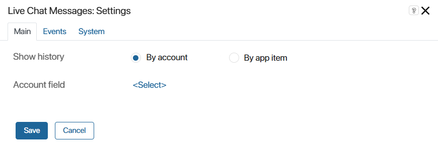
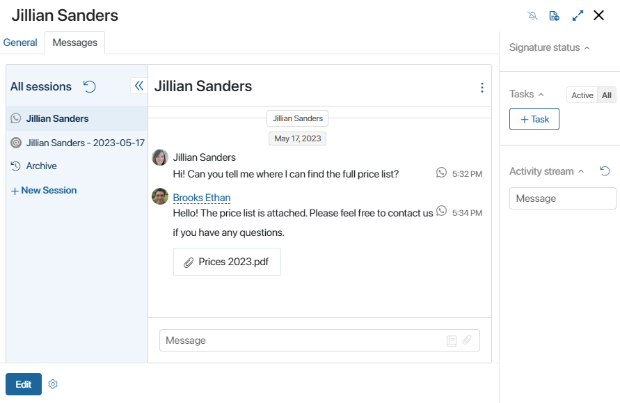
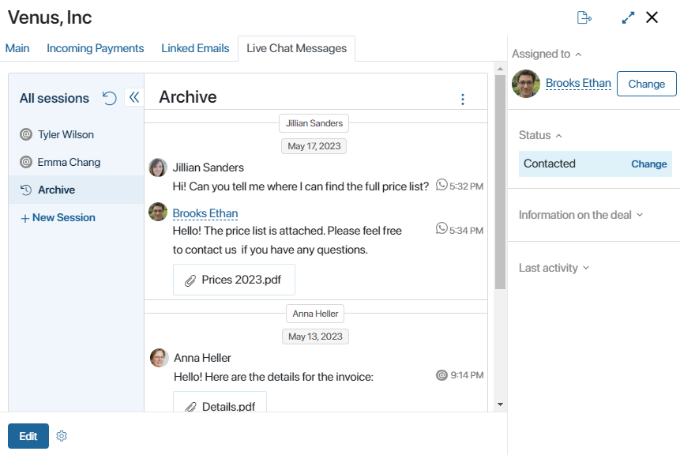

The Live Chat Messages widget is used to display message history in Live Chats sessions. Placing it on an app form allows viewing chats on app item pages. This feature is used by:
- Operators and supervisors. Operators can reply to messages in sessions assigned to them and create new ones.
- Users without access to the Live Chats workspace. If a group that the user belongs is granted the read permission to sessions, they can view them on the pages of other apps.
Set up the widget
The Live Chat Messages widget can be used only on forms of apps that have:
- An Account type property.
- An App type property linked with an app with an Account type field in its context.
To configure the widget:
- Drag it from the right-side panel of the interface designer to the modeling canvas or click the +Widget button. Read more about placing widgets on app forms in the Form templates article.
- In the window that opens, configure the widget’s settings.

- By account. Select this option if you want to find sessions linked with the same account and view communications with the same customer from all live chats.
- Account field. Click <Select> and specify an Account type field from the context of the current app or an app bound with it.
- By app item. Select this option to view communications from all live chats associated with the same deal or request.
- App. Click <Select>. Choose Current item to display all messages associated with items of the app whose form you are configuring. You can also choose another app with an Account type field from the current app’s context.
- On the Events and System tabs, set settings that are the same for all widgets. You can control widget visibility, configure its hover behavior, set styles, etc. Read more about it in the System widget settings article.
- Save the settings.
- To make the widget available to users, click Save and Publish on the top panel of the interface designer.
Examples
By account
Let’s say you set up two live chats with different instant messengers connected to them. Both live chats have Contacts as the app specified for binding accounts.
A customer registered in the Contacts app sends messages to both live chats. Two separate sessions are created in BRIX. After finding out initial information about the customer, the operators link the sessions with the contact using the +Bind button. After that, the messenger accounts that the customer used to contact your organization are added to the contact’s page. The contact’s name is now displayed on the right-side panel of both sessions. Operators can go from sessions to the contact’s page and view information about the customer.
You want communications with the customer from all sessions to be displayed on the contact’s page. To do that, you can create a separate tab on the view form of the Contacts app and add the Live Chat Messages widget to it. In the widget’s settings, select the By account option and choose the Accounts field from the app’s context.
On the left side of the widget, a list of active sessions, which operators have linked to the contact, will be displayed. Operators and live chat supervisors, as well as users with read permission to the sessions, can view the messages. Operators responsible for the sessions will be able to correspond with the customer directly in the widget.
In the chat window, messages from the session selected in the menu on the left will be displayed. If the customer has previously contacted the live chat via the same communication channel, the chat will also provide access to all previous correspondence with them. Suppose the customer previously wrote to the live chat via WhatsApp. After the operator answered the question, the session was closed. If the customer writes through this messenger again, messages from the earlier inquiry will be displayed in the widget above the messages from the current session. Previous messages are accessible, even if the closed session is not linked to the contact.
Additionally, the widget allows viewing messages from all closed sessions associated with the item. For this, you need to click on Archive in the menu on the left.
Furthermore, operators and supervisors can create a new session with the client from the widget. To do this, click +New Session, then in the window that opens, select the live chat and the customer’s account in the window that opens.

By app item
Let’s say two customers from the same company message to live chats that have the Deals app selected for registering requests in the settings. Two separate sessions are created, and operators bind them to the same app item, for example, to one deal.
If you want all conversations associated with the deal to be available on its page, add the Live Chat Messages widget to the view form of the Deals app. In its settings, select the By app item option and choose Current item.
On the left side of the widget, a list of active sessions, which operators have linked to the deal, will be displayed. Operators and live chat supervisors, as well as users with read permission to the sessions, can view the messages. Operators will be able to respond to messages in the sessions assigned to them directly in the widget.
In the chat window, messages from the session selected on the left are displayed. If the customer has contacted the live chat again through the same communication channel, earlier correspondence will also be displayed above the messages from the current session. For example, the customer previously contacted the company’s technical support via email. After resolving the issue, the operator closed the session. If the client writes to the email address again, messages from the previous inquiry will appear in the widget above the messages from the current session. Note that previous messages are identified by the communication channel within the live chat, so earlier correspondence is displayed even if the closed session is not linked to this specific app item.
Additionally, in the widget, you can view messages from all closed sessions related to the item by clicking on Archive in the menu on the left.
Operators and supervisors can use the widget to create new sessions. To do that, click +New Session. In the window that opens, select the live chat, the contact, and the account.
